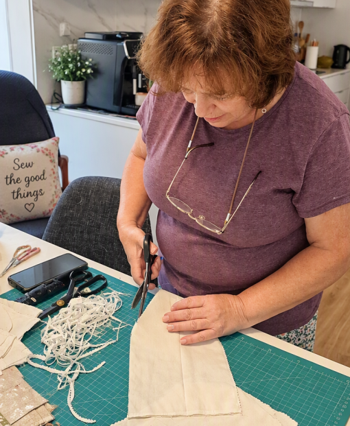
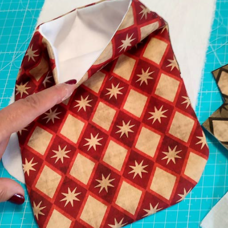
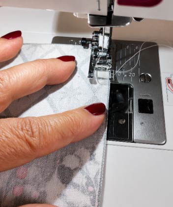
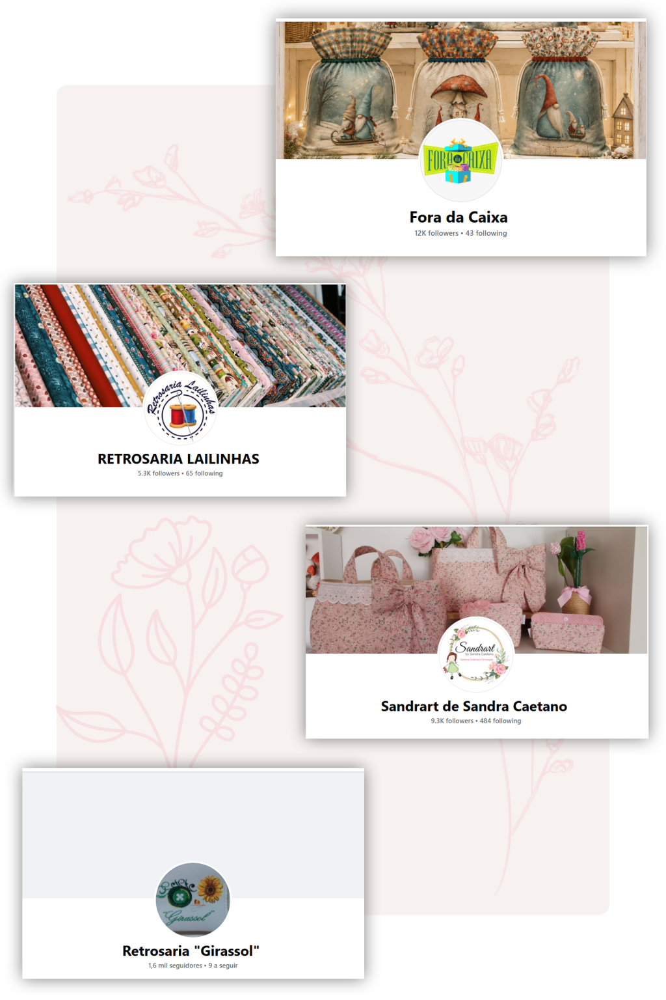

Feito à mão com materiais de qualidade.
Cada peça é criada com dedicação, materiais cuidadosamente selecionados e atenção aos pequenos detalhes. Porque acreditamos que os produtos feitos à mão têm uma história para contar.
Cada peça é criada com dedicação, materiais cuidadosamente selecionados e atenção aos pequenos detalhes. Porque acreditamos que os produtos feitos à mão têm uma história para contar.
Cada peça é criada com paixão, dedicação e atenção aos detalhes. Produtos exclusivos, feitos à mão e pensados para tornar cada criação verdadeiramente especial.
Cada peça é confeccionada artesanalmente, com cuidado e atenção a cada detalhe, garantindo um acabamento único.
Escolha tecidos, padrões e detalhes para criar um produto exclusivo, feito especialmente para si.
As nossas criações não são produzidas em massa. Cada peça tem personalidade própria e um toque especial.
Utilizamos tecidos e materiais de qualidade, escolhidos com rigor para garantir durabilidade e beleza.
.png)



A paixão pela costura acompanha-me desde a infância, inspirada pelos serões à lareira e pela máquina de costura da minha avó, que transformava simples tecidos em peças cheias de vida.
Hoje, já na reforma e com a orientação de uma excelente mestra, redescobri esse sonho.
Cada peça é criada com carinho, dedicação e o prazer de transformar bonitos tecidos em algo único. As Costurices da Isabel são feitas de memórias, aprendizagem e muito amor por aquilo que faço.
Obrigada por visitarem a minha página e por valorizarem o trabalho feito à mão.
Espero que gostem!
O meu especial agradecimento a:
.png)
Obrigado pelo apoio, inspiração e partilha de ideias que ajudaram a dar vida a muitos dos meus projetos.
Obrigado pela simpatia, disponibilidade e pelos materiais de qualidade que fazem parte de tantas criações.
Um agradecimento especial à Sandra Caetano, cuja formação, partilha de conhecimento e incentivo foram fundamentais no início desta jornada na costura criativa.
Obrigado pelo apoio constante e pela atenção a cada detalhe, contribuindo para tornar cada projeto especial.
